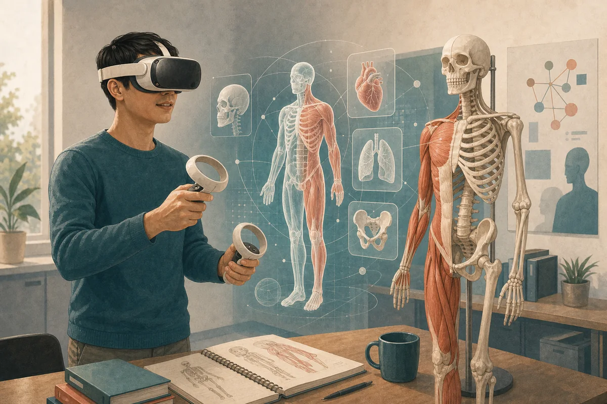
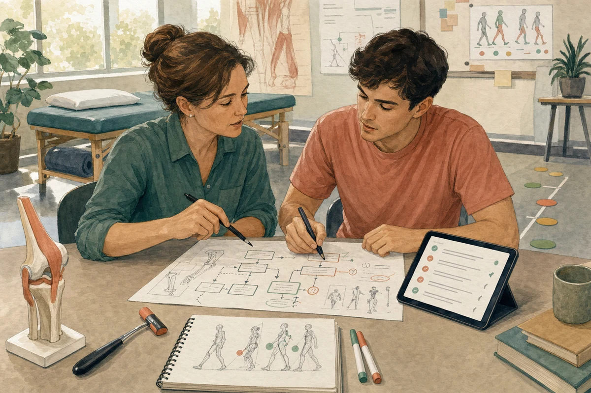
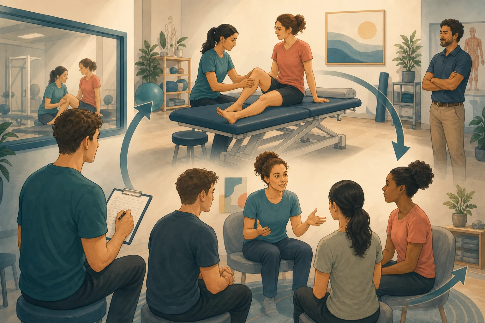
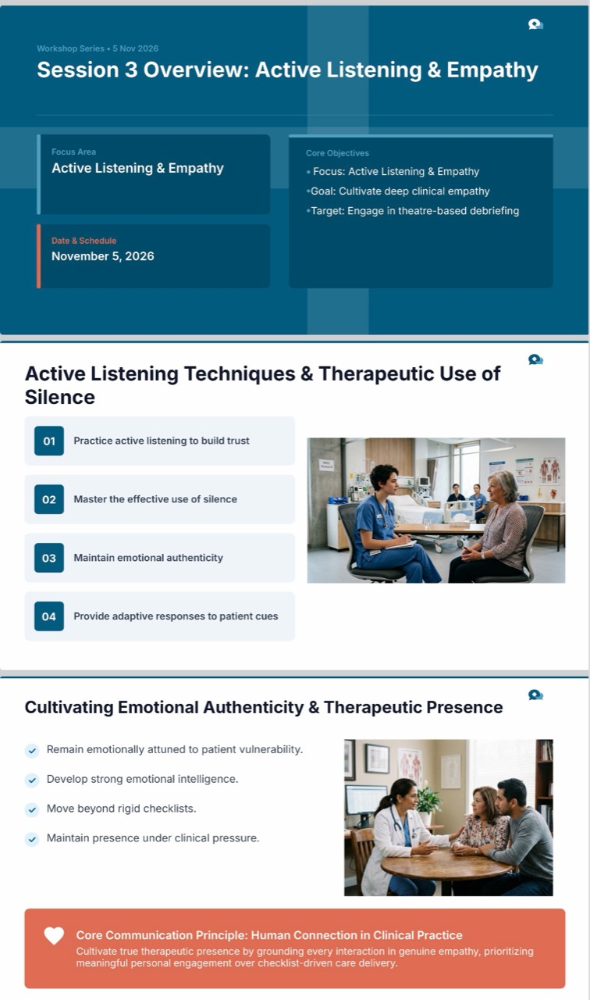

A public academic laboratory
Tak Wing Yu
Senior Lecturer in Physiotherapy
Better learning through AI, VR and simulation.
My work begins with an educational problem, then asks whether technology can make thinking more visible, practice more meaningful, or feedback more useful.
Featured work
Selected projects
Research and learning design in practice.

Virtual Reality Acupuncture
A curriculum-aligned VR application with training, practice, and assessment modes, supported by preparation and debriefing rather than treated as a stand-alone simulation.
Explore project
Clinical Reasoning Chatbot
A pilot chatbot that prioritises safety screening, staged questioning, explanation, and reflection before suggestions are revealed.
Explore project
Simulation in Health Professions Education
A structured role-rotation model involving Learner, Peer Patient, Observer, and Peer Debriefer roles, supported by role preparation, focused observation, guided reflection, and educator oversight for clinical accuracy and psychological safety.
Explore projectRecent publications
- 2026 Exploring physiotherapy students’ clinical experiences during educational disruption, through a community of practice lensHealth SA Gesondheid
- 2026 Virtual Reality in Health Professions Education: Qualitative Descriptive Study of Educators’ PerspectivesJMIR XR and Spatial Computing
- 2024 Perceptions of health professions students on the use of immersive virtual realityAfrican Journal of Health Professions Education
Teaching
Learning design before technology: curriculum alignment, assessment and support for clinical reasoning.
Explore teachingBehind the design
Latest writing
Recent reflections on the decisions, tensions, limitations, and occasional failures behind educational innovation.

Inside a Cell: Teaching Human Physiology with VR
A shared iPad view, a safety monitor and a short race gave small groups a way to explore a virtual cell together.
Read article
Beyond IQ: What Actor Training Taught Me About Emotional Intelligence and Clinical Readiness
A Year 4 physiotherapy workshop made listening, emotional awareness and therapeutic presence visible—and reminded me that readiness for practice extends beyond knowledge.
Read article
The AI Learning Paradox: Why I Still Write Things Down
AI can help us produce better answers. My handwritten notes remind me to ask whether we are also doing the work that helps us learn.
Read articleCollaboration
Collaborate with me
I welcome opportunities to collaborate on research, teaching innovation, curriculum development, and educational technology in health professions education.
- AI and clinical reasoning
- Virtual reality curriculum integration
- Simulation and clinical education
- Educational research